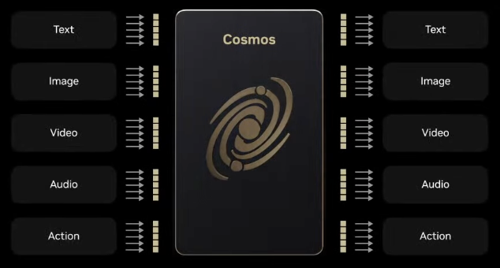

Jayjun Lee
Welcome! I'm a PhD student in Robotics at the University of Michigan and a Robotics research intern at the Dexterity team at NVIDIA.
I'm fortunate to be advised by Professor Nima Fazeli
and to be a member of the Manipulation and Machine Intelligence (MMINT) Lab.
My research focuses on robot learning and dexterity to develop robots that can perceive and interact with the physical world.
I graduated from Imperial College London where I received my BEng in Electronic and Information Engineering.
Previously, I worked with Professor Ad Spiers in the Manipulation and Touch Lab.
I also worked with Professor Joyce Chai in the Situated Language and Embodied Dialogue (SLED) Lab and
Professor Cindy Chestek in the Cortical Neural Prosthetics Lab.
Github
Google Scholar
Twitter
Email:
[unscramble]
Aug 2026
Invited talk at RCHI Lab at CMU!Jun 2026
We released the Cosmos 3 Omnimodal World Models for Physical AI!May 2026
RoboMME is accepted to ICML 2026 as Spotlight & Oral in Seoul, Korea!Apr. 2026
HydroShear is accepted to RSS 2026 in Sydney, Australia!Mar. 2026
Invited talk at Isaac Lab Round Table at NVIDIA GTC 2026!Jan. 2026
VA2Contact is accepted to ICRA 2026 in Vienna, Austria!Jan. 2026
I joined the Dexterity team at NVIDIA as a Robotics research intern!Sep. 2025
I'm co-organizing Human-to-Robot workshop at CoRL 2025!Aug. 2025
AimBot is accepted to CoRL 2025 in Seoul, Korea!Apr. 2025
ViTaSCOPE is accepted to RSS 2025 in Los Angeles!

Cosmos 3: Omnimodal World Models for Physical AI
NVIDIA Cosmos Team
Webpage
Technical Report
Code


RACER: Rich Language-guided Failure Recovery Policies for Imitation Learning
*,
*,
, and
★ Best Overall Award @ UM AI Symposium 2024 ★
The 3rd Workshop on Language and Robot Learning (LangRob) @ CoRL 2024
International Conference on Robotics and Automation (ICRA) 2025
Webpage
Paper
Code


Naturalistic Robot Arm Trajectory Generation via Representation Learning
and Adam Spiers
UK-RAS Towards Autonomous Robotic Systems (TAROS) 2023
PDF